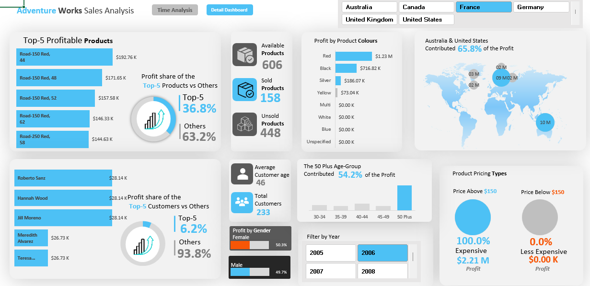
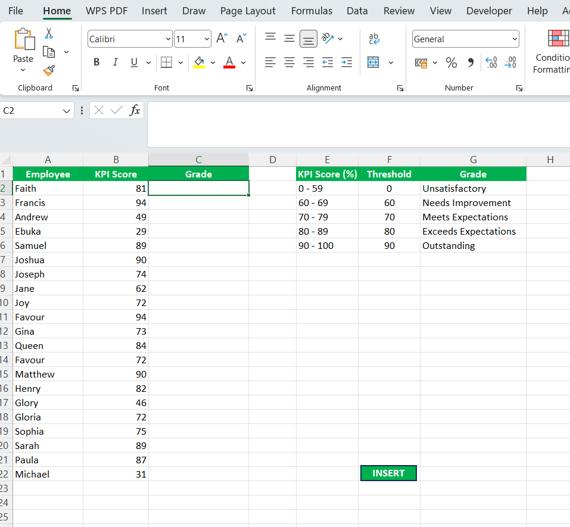
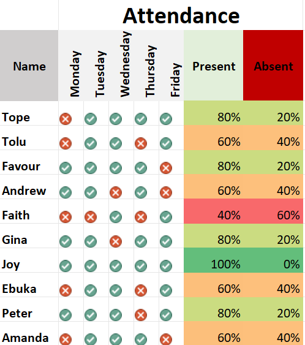

This project focused on transforming a raw, unstructured dataset into a clean, analysis-ready data model for job lay-offs in the world. The original dataset contained missing values, duplicate records, inconsistent formatting, and structural irregularities that limited its analytical reliability.


This exploratory data analysis (EDA) project examined global layoff trends to identify patterns across companies, industries, countries, and time periods. The dataset included variables such as company name, industry, total employees laid off, percentage laid off, funding stage, location, and date.

This project involved developing an interactive Excel dashboard to analyze and visualize four years of financial performance data. The dashboard provides a comprehensive view of Revenue, Cost of Goods Sold (COGS), Transactions, and Profit, enabling multi-level time-based analysis.

This project focused on automating data retrieval and validation processes in Excel using VLOOKUP combined with VBA macros. The objective was to reduce manual data entry, improve accuracy, and streamline repetitive tasks.

This project involved creating an attendance tracking system in Excel using conditional formatting with a color scale. The system automatically highlights attendance records based on predefined criteria, making it easy to identify attendance patterns and trends.